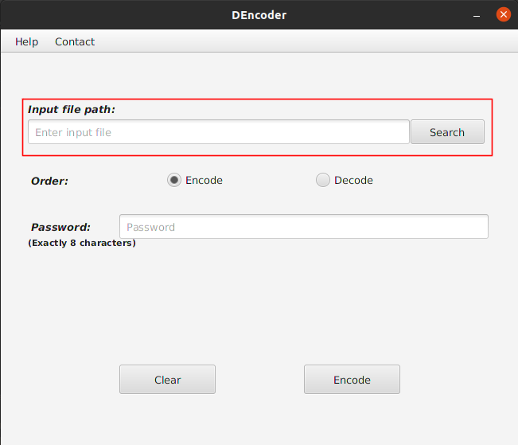
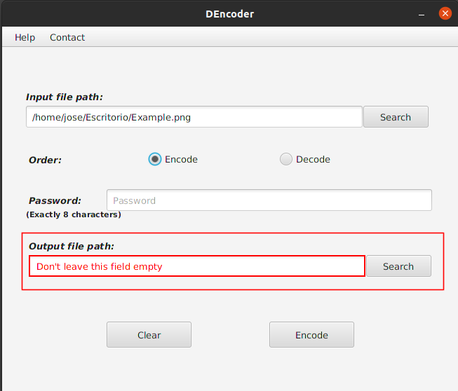
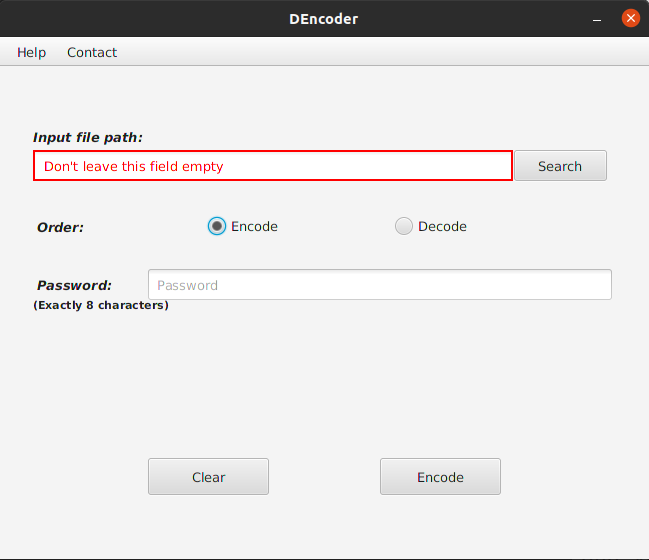
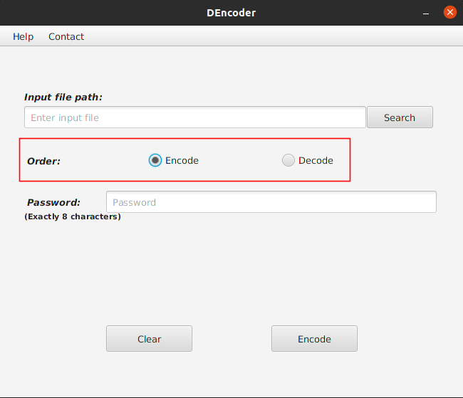
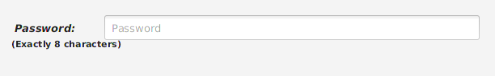
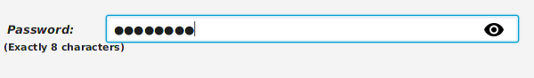
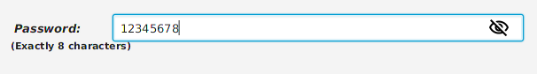
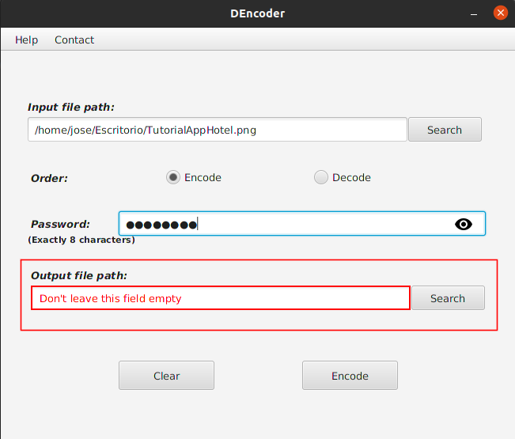

Manual de usuario
DEncoder
Bienveni@ al manual de usuario de DEncoder, este software esta diseñado para ser simple y fácil de usar, pero a veces, queda poco claro el procedimiento a seguir.
Al iniciar la aplicación se encontrará con diversos campos, un campo de texto con un botón en primer lugar, dos botones de radio con la orden de cifrar o descifrar, un campo de texto para introducir la contraseña (la cual debe ser de , exactamente, 8 caracteres), y, una vez introduzcamos un fichero de entrada, se hará visible el campo para introducir la ruta del fichero de salida, con su respectivo botón para buscar.
Paso 1: Introducir la ruta al fichero de entrada (el fichero a cifrar o descifrar), en el campo que se muestra a continuación enmarcado en el cuadro rojo:

En este campo deberá introducir la ruta al fichero que desea cifrar o descifrar.
Si tiene sistema operativo Windows puede obtener la ruta del fichero siguiendo los siguientes pasos → ENLACE A PAGINA
Si es usuario de Linux, podrá hacerlo de la siguiente forma → ENLACE PAGINA
Ademas, puede seleccionar el archivo directamente dándole al botón Search. Al hacer click, se abrirá una ventana para navegar entre los ficheros de su sistema y seleccionar el fichero.
Una vez introduzca la ruta al fichero, se habilitará el campo para introducir el fichero de salida recordándonos que no lo dejemos vacío.

ERRORES
Si el campo pierde el foco y está vacío, le recordará que no puede dejar este campo vacío:

Paso 2: Seleccionar la orden a realizar, o bien cifrar (Encode), o bien descifrar (Decode). Podremos seleccionar la orden haciendo click en el botón correspondiente de los marcados en la siguiente imagen:

Paso 3: Ahora debe introducir la contraseña que se va a emplear para el cifrado, recuerde que debido al funcionamiento del algoritmo de cifrado, esta debe ser de exactamente 8 caracteres. Podrá ver que, a no ser que el campo tenga exactamente 8 caracteres, el borde de este campo será de color rojo, indicando que no se cumple el requisito exigido en la contraseña.
También podrá ver como al empezar a escribir se habilitará un icono de un ojo a la derecha del campo de texto, haciendo click en él, la contraseña se hará visible.



Paso 4: Llegados a este punto, deberá definir la ruta y el nombre del fichero de salida en el campo de texto destinado a tal fin:

Al igual que para seleccionar el fichero de entrada, podrá escribir la ruta al fichero que se creará (nombre que tendrá el fichero de salida incluido), o seleccionar el directorio donde desea ubicarlo. Tenga cuidado, ya que si selecciona el directorio a través del botón de búsqueda, el nombre del fichero de salida, por defecto, será el mismo nombre del fichero de entrada, añadiendo la extensión .cif de cifrado, si desea otro nombre, puede modificarlo en el campo de texto.
Siguiendo los pasos anteriores, habrá conseguido generar su fichero cifrado o descifrado.
Explicación más detallada de cada componente:
→ Fichero de entrada.
→ Orden-
→ Contraseña.
→ Fichero de salida.